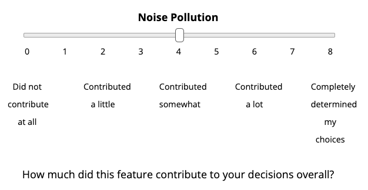

<!doctype HTML>
<html>
<head>
	<title>Research Study</title>
	<script src="https://ajax.googleapis.com/ajax/libs/jquery/2.1.4/jquery.min.js"></script>
	<link rel="stylesheet" href="https://ajax.googleapis.com/ajax/libs/jqueryui/1.11.4/themes/smoothness/jquery-ui.css">
	<script src="https://ajax.googleapis.com/ajax/libs/jqueryui/1.11.4/jquery-ui.min.js"></script>
	<script src="https://cdnjs.cloudflare.com/ajax/libs/underscore.js/1.8.3/underscore-min.js"></script>
	<script src="jspsych/jspsych.js"></script>
    <script src="jspsych/plugins/jspsych-html-keyboard-response.js"></script>
    <script src="jspsych/plugins/jspsych-html-button-response.js"></script>
    <script src="jspsych/plugins/jspsych-html-slider-response.js"></script>
    <script src='jspsych/plugins/jspsych-multiple-slider.js'></script>
    <script src='jspsych/plugins/jspsych-instructions.js'></script>
    <script src='jspsych/plugins/jspsych-survey-text.js'></script>
    <script src='jspsych/plugins/jspsych-external-html.js'></script>
    <script src='jspsych/plugins/jspsych-html-button-response.js'></script>
    <script src='jspsych/plugins/jspsych-html-button-response-machoice.js'></script>
    <!--<script src='jspsych/plugins/jspsych-image-button-response.js'></script>-->
    <link href="jspsych/css/jspsych.css" rel="stylesheet" type="text/css">
    <script src="utilities.js"></script>
    <style>
	td, th {padding: 20px;}
	.big {font-size: 40px;}
	.med {font-size: 24px;}
	</style>
</head>
<body>
</body>
<script>

// ***Setting Up the Experiment***

// Meta-var's
var turk_code = "JSALK23";
var study_version = "ma_choice_v1_pilot1";

var study_time = 25;
var study_money = 3.60;

// var instr_reading_time = 2000; // in milliseconds
// var instructions_time = 0;

// // find the assignmentId & debugging status from the URL
var urlParams = parseURLParams(window.location.href);
var assignmentId = '';
var debug = false;
if (typeof urlParams != "undefined") {
    if (urlParams.hasOwnProperty('assignmentId')) {
        assignmentId = urlParams.assignmentId[0];
    }

    if (urlParams.hasOwnProperty('debug')) {
        debug = urlParams.debug[0];
    }
}


//added attributes to arrays-- other option is to create hashmap/dictionary
var home_attributes= ['Number of Bedrooms','Size of Garage','Amount of Crime in Neighborhood','Proximity to Parks','Proximity to Waterfront/Beaches',
'Proximity to Cafes/Restaurants','Noise Pollution','Reputation of Closest School','Amount of Natural Light','Age of Building','Washer/Dryer','Size of Yard','Fireplace',
'Central AC','Climate of Area','Hardwood Floors','Freshly Painted Exterior','Size of Home'];
var yn =['Yes','No'];
var size_of_att = ['None','Small','Medium','Large'];
var crime = ['Very Low', 'Low', 'Moderate', 'High', 'Very High'];
var pollution = ['Low', 'Medium', 'High'];
var prox1 = ['5 min', '10 min', '20 min'];
var prox2 = ['10 min', '30 min', '60 min', '90 minutes', '120 minutes'];
var light = ['No natural light', 'A little natural light', 'Moderate natural light', 'A lot of natural light'];
var age = ['New', 'Medium', 'Old'];
var climate = ['Very Hot', 'Hot', 'Moderate', 'Cold', 'Very Cold'];
var reputation = ['Very bad', 'Bad', 'Moderate', 'Good', 'Very Good'];

var num_of_attributes = 7;
var num_practice_trials = 10;
var num_trials = 100;
var trial_wait_time = 7000;

if (debug) {
	num_practice_trials = 5;
	num_trials = 10;
	trial_wait_time = 1000;
}

function generateTable(){
	var cur_attributes = jsPsych.randomization.sampleWithoutReplacement(home_attributes,num_of_attributes);
	//for (let j=0;j<cur_attributes.length;j++)
	//console.log(cur_attributes[j]);
	var arr = [];
	for (let j=0;j<cur_attributes.length;j++){
	 	if(cur_attributes[j]==='Number of Bedrooms'){
	 		arr.push(['Number of Bedrooms',Math.floor(Math.random() * 3) + 1, Math.floor(Math.random() * 3) + 1]);
	 	}

		// else if(cur_attributes[j]=='Pool'){
		// 	arr.push(['Pool',yn[Math.floor(Math.random() * yn.length)],yn[Math.floor(Math.random() * yn.length)]]);
		// }

		else if(cur_attributes[j]=='Size of Garage'){
			arr.push(['Size of Garage',size_of_att[Math.floor(Math.random() * size_of_att.length)],size_of_att[Math.floor(Math.random() * size_of_att.length)]]);
		}

		else if(cur_attributes[j]=='Amount of Crime in Neighborhood'){
			arr.push(['Amount of Crime in Neighborhood',crime[Math.floor(Math.random() * crime.length)],crime[Math.floor(Math.random() * crime.length)]]);
		}

		else if(cur_attributes[j]=='Proximity to Parks'){
			arr.push(['Proximity to Parks',prox1[Math.floor(Math.random() * prox1.length)],prox1[Math.floor(Math.random() * prox1.length)]]);
		}

		else if(cur_attributes[j]=='Proximity to Waterfront/Beaches'){
			arr.push(['Proximity to Waterfront/Beaches',prox2[Math.floor(Math.random() * prox2.length)],prox2[Math.floor(Math.random() * prox2.length)]]);
		}

		else if(cur_attributes[j]=='Proximity to Cafes/Restaurants'){
			arr.push(['Proximity to Cafes/Restaurants',prox1[Math.floor(Math.random() * prox1.length)],prox1[Math.floor(Math.random() * prox1.length)]]);
		}

		else if(cur_attributes[j]=='Noise Pollution'){
			arr.push(['Noise Pollution',pollution[Math.floor(Math.random() * pollution.length)],pollution[Math.floor(Math.random() * pollution.length)]]);
		}

		else if(cur_attributes[j]=='Reputation of Closest School'){
			arr.push(['Reputation of Closest School',reputation[Math.floor(Math.random() * reputation.length)],reputation[Math.floor(Math.random() * reputation.length)]]);
		}

		else if(cur_attributes[j]=='Amount of Natural Light'){
			arr.push(['Amount of Natural Light',light[Math.floor(Math.random() * light.length)],light[Math.floor(Math.random() * light.length)]]);
		}

		else if(cur_attributes[j]=='Age of Building'){
			arr.push(['Age of Building',age[Math.floor(Math.random() * age.length)],age[Math.floor(Math.random() * age.length)]]);
		}

		else if(cur_attributes[j]=='Washer/Dryer'){
			arr.push(['Washer/Dryer',yn[Math.floor(Math.random() * yn.length)],yn[Math.floor(Math.random() * yn.length)]]);
		}

		else if(cur_attributes[j]=='Size of Yard'){
			arr.push(['Size of Yard',size_of_att[Math.floor(Math.random() * size_of_att.length)],size_of_att[Math.floor(Math.random() * size_of_att.length)]]);
		}

		else if(cur_attributes[j]=='Fireplace'){
			arr.push(['Fireplace',yn[Math.floor(Math.random() * yn.length)],yn[Math.floor(Math.random() * yn.length)]]);
		}

		else if(cur_attributes[j]=='Central AC'){
			arr.push(['Central AC',yn[Math.floor(Math.random() * yn.length)],yn[Math.floor(Math.random() * yn.length)]]);
		}

		else if(cur_attributes[j]=='Climate of Area'){
			arr.push(['Climate of Area',climate[Math.floor(Math.random() * climate.length)],climate[Math.floor(Math.random() * climate.length)]]);
		}

		else if(cur_attributes[j]=='Hardwood Floors'){
			arr.push(['Hardwood Floors',yn[Math.floor(Math.random() * yn.length)],yn[Math.floor(Math.random() * yn.length)]]);
		}

		else if(cur_attributes[j]=='Freshly Painted Exterior'){
			arr.push(['Freshly Painted Exterior',yn[Math.floor(Math.random() * yn.length)],yn[Math.floor(Math.random() * yn.length)]]);
		}

		else if(cur_attributes[j]=='Size of Home'){
			arr.push(['Size of Home',(Math.floor(Math.random() * 1600) + 400) + " sq feet", (Math.floor(Math.random() * 1600) + 400) + " sq feet"]);
		}

		// else if (cur_attributes[j]=='Proximity to Neighboring Houses') {
		// 	arr.push(['Proximity to Neighboring Houses',prox1[Math.floor(Math.random() * prox1.length)],prox1[Math.floor(Math.random() * prox1.length)]]);
		// }

//console.log(cur_attributes);
//console.log(arr[0][1]);
	}
console.log(arr);

let tbl_html = "<div align='center'><table border = 2px solid black><thead>\
</tr><tr><th></th><td><b>Home A</b></td><td><b>Home B</b></td>";

for (var i = 0; i < cur_attributes.length; i++) {
	tbl_html += "<tr><th>"+arr[i][0]+"</th><td>"+arr[i][1]+"</td><td>"+arr[i][2]+"</td>";
}

tbl_html += '</tr></table><br>';

//return "<div align='center'><table border = 2px solid black><thead></tr><tr><th></th><td><b>Home A</b></td><td><b>Home B</b></td><tr><th>"+arr[0][0]+"</th><td>"+arr[0][1]+"</td><td>"+arr[0][2]+"</td><tr><th>"+arr[1][0]+"</th><td>"+arr[1][1]+"</td><td>"+arr[1][2]+"</td></tr><tr><th>"+arr[2][0]+"</th><td>"+arr[2][1]+"</td><td>"+arr[2][2]+"</td></tr><tr><th>"+arr[3][0]+"</th><td>"+arr[3][1]+"</td><td>"+arr[3][2]+"</td></tr><tr><th>"+arr[4][0]+"</th><td>"+arr[4][1]+"</td><td>"+arr[4][2]+"</td></tr></table>"
return tbl_html;
}

var start_instructions = 0;

// ***Intro Blocks***

var welcome = {
	type: "html-keyboard-response",
	stimulus: "<div class='center-content'>Welcome to the experiment. Press any key to begin."
};

var get_id = {
	type: 'survey-text',
	questions: [{prompt: "<b>Worker ID:</b>", name: "worker_id"}],
	preamble: ["Please enter your <b>Amazon Mechanical Turk Worker ID</b> below.<br>(When you're done, press <b>'Continue'</b>; don't hit Enter.)<br><br>If you do not enter your ID accurately, we will not be able to pay you."],
};

var get_id_loop = {
	timeline: [get_id],
	loop_function: function(data) {
		id = data.values()[0].response.worker_id;
		if (id) {
			jsPsych.data.addProperties({
				subject: id,
				version: study_version,
				assignmentId: assignmentId
			});

			start_instructions = Date.now();

			return false;
		} else {
			alert("Please provide your Amazon Mechanical Turk Worker ID.");
			return true;
		}
	}
}

var check_consent = function(elem) {
	if ($('#consent_checkbox').is(':checked')) {
		return true;
	}
	else {
		alert("If you wish to participate, you must check the box next to the statement 'I agree to participate in this study.'");
		return false;
	}
	return false;
};

var consent_block = {
	type:'external-html',
	url: "consent.php?time=" + study_time + "&money=" + study_money + "&test=1",
	cont_btn: "start",
	check_fn: check_consent,
	force_refresh: true
};

// first attention check
var attnCheck1 = {
    type: 'survey-text',
    questions: [{prompt: 'Your response', name: 'attention_check'}],
    preamble: ["In order to complete this study, you will need to pay close attention for its entire duration. If you do not pay close attention, your data will be unusable.\
		<b>Please do not take this study unless you have time and energy to pay attention for the full length of time.</b>\
		<br><br>Please type this exact sentence into the box below: 'I will complete this study with my full attention.' and then continue."],
    on_finish: function(data) {
    	jsPsych.data.addProperties({attention_check: data.response.attention_check});
    }
};

// ***Welcome and Task 1 Instructions***
var instructions_text = ['Welcome to the study! <br></br>\
	Please <b>do not</b> press the <b>back</b> button or <b>refresh</b> your browser during the study; if you do, you will have to start over. <br><br> Please click <b>Next</b> and read the following instructions carefully. <br></br>',

 	'<br></br>In this study, you will make a series of choices. Each choice will be between <b>two homes that you might want to rent</b>.',

	"Each home will have a list of features that describe it. For instance, here are two homes that you might be asked to choose between:<br><br>\
	</img>\
	<br><br><b>Your job will be to choose which home you'd rather rent.</b>",

	"The descriptions of the homes on each trial will be incomplete.\
	So for instance, on some trials, we might tell you about the age of the building and how close the home is to parks; \
	but on other trials, we might instead tell you information about the number of bedrooms and the reputation of the closest school.<br><br>\
	Your job is to use the information you have to make the best choice you can.",

	"We'll ask you to spend some time thinking about each choice before making it. On each trial, after " + trial_wait_time / 1000 + " seconds, two buttons will appear like this:<br><br>\
	</img><br><br>\
	When you're ready, select the button that corresponds to your choice (i.e. either Home A or Home B). \
	You don't have to make your choice as soon as the buttons appear; you can take as much time as you need on each trial.",

	"Let's give you some practice trials to get the hang of it. There will be " + num_practice_trials + " practice trials.<br><br>\
	When you're ready, please continue."
];

 var instructions = {
	type: "instructions",
	pages: instructions_text,
	show_clickable_nav: true
}

var instructions2 = {
	type: 'instructions',
	pages: ["Great job. Let's move on to the real trials.",
		"One last thing before you start. While you're making your choices, <b>please pay attention to how you're making them</b> -- i.e. how much the different factors are influencing your choice.",
		"There will be " + num_trials + " trials in total. Please do your best to pay attention throughout this whole section, and continue to make the best choice you can on each trial.<br><br>\
		When you're ready to start, press 'Next'."],
		show_clickable_nav: true
}

var practice_trials = [];
for (var i = 0; i < num_practice_trials; i++) {
	practice_trials.push({
		 type: 'html-button-response-machoice',
		 stimulus: generateTable,
		 choices: ['Home A','Home B'],
		 prompt: 'Which would you choose?<br><small>(Trial ' + (i+1) + ' out of ' + num_practice_trials + ')</small>',
		 button_duration: trial_wait_time //how long to hide buttons,
	});
}

var trials = [];
for (var i = 0; i < num_trials; i++) {
	trials.push({
		 type: 'html-button-response-machoice',
		 stimulus: generateTable,
		 choices: ['Home A','Home B'],
		 prompt: 'Which would you choose?<br><small>(Trial ' + (i+1) + ' out of ' + num_trials + ')</small>',
		 button_duration: trial_wait_time //how long to hide buttons,
	});
}

var fixation = {
    type: 'html-keyboard-response',
    stimulus: '<span style="font-size:40px;">+</span>',
    choices: jsPsych.NO_KEYS,
    trial_duration: 1000
}

//*** Survey Questions ***
//need changes
var attribute_instructions_text = ["Great work.<br><br>\
In this next section, we are going to ask you to reflect on the decisions you just made in part 1. \
Specifically, we are going to ask <b>how much each feature contributed to your decisions overall</b>, relative to all the other features.<br><br>\
For instance, we'll ask you how much the homes' proximity to parks contributed to your decisions, how much the reputation of the closest school contributed, and so on.",

"This is what the questions will look like:<br><br>\
</img><br><br>\
So if the size of the garage contributed the least out of all features, you'd move the slider to 0; if it contributed an average amount, you'd move the slider to around 4; \
and if it contributed the most out of all features, you'd move the slider to 8. And you can move the slider anywhere in between.",

"Of course, features will likely have contributed different amounts to your decisions on different trials. Just do your best to report how much each feature contributed on average.",

"When you're ready, press 'Next'."
];

var attribute_instructions = {
	type: 'instructions',
	pages: attribute_instructions_text,
	show_clickable_nav: true
};

var label = ['0 <br></br> Contributed the least out of all features', '1', '2 <br></br> Contributed somewhat', '3', '4 <br></br> Contributed an average amount', '5', '6 <br></br> Contributed a lot', '7', '8<br></br>Contributed the most out of all features']
var prompt = '<br><br><br>How much did this feature contribute to your decisions overall (relative to all the other features)?<br></br>'
var attribute_ratings = new Array(19);
var attribute_questions = ['<p>Number of Bedrooms</p>','<p>Pool</p>','<p>Size of Garage</p>','<p>Amount of Crime in Neighborhood</p>','<p>Proximity to Parks</p>','<p>Proximity to Waterfront/Beaches</p>','<p>Proximity to Cafes/Restaurants</p>','<p>Noise Pollution</p>','<p>Closest Good-Reputed-School </p>','<p>Amount of Natural Light</p>','<p>Age of Building</p>','<p>Washer/Dryer</p>','<p>Size of Yard</p>','<p>Fireplace</p>','<p>Central AC</p>','<p>Climate</p>','<p>Hardwood Floors</p>','<p>Freshly Painted Exterior</p>','<p>Proximity to Neighboring Houses</p>'];
var attribute_rating_questions = _.shuffle(attribute_questions)

for (var i = 0; i < 19; i++) {
	attribute_ratings[i] = {
	  	type: 'html-slider-response',
	  	stimulus: attribute_rating_questions[i],
	  	labels: label,
	 	prompt: prompt,
	 	data: {which_trial: i},
	 	require_movement: true,
	};
};

var strategy = {
	type: 'survey-text',
	questions: [
	{prompt: "Great job. In this last section, we have a series of further questions for you about yourself and how you made choices in the experiment.<br><br>\
	Please describe, in your own words, how you made your choices in Part 1 of this study.", name: 'strategy', rows: 15, columns: 120},
	],
};

var consistency = {
    type: 'html-slider-response',
    stimulus: '<p>How consistent were you with your decision strategy in the experiment? In other words, how much did the way you made your choices stay the same from trial to trial?</p>',
    labels: ['0 <br></br> Very Inconsistent', '1', '2 <br></br> Quite Inconsistent', '3', '4 <br></br> Neither consistent nor inconsistent', '5', '6 <br></br> Quite Consistent', '7', '8<br></br>Very Consistent'],
};

var attention = {
	type: 'html-slider-response',
    stimulus: "<p>How attentive were you throughout the experiment? (Please be honest; we won't punish you for being inattentive.)</p>",
    labels: ['0 <br></br> Very Inattentive', '1', '2 <br></br> Quite Inattentive', '3', '4 <br></br> Neither attentive nor inattentive', '5', '6 <br></br> Quite Attentive', '7', '8<br></br>Very Attentive']
};

var scale_1 = [
  "Never",
  "Rarely",
  "Sometimes",
  "Often",
  "Always"
];

var decision_instructions= ['Please indicate to what extent the statements below match your style of making decisions.']
var dec_slider = {
	type: 'instructions',
	pages: decision_instructions,
	show_clickable_nav: true
};

var likert_page = {
  type: 'multiple-slider',
  questions: [
    {prompt: "I make decisions on the spur of the moment.", labels: scale_1},
    {prompt: "I like to consider all the alternatives.", labels: scale_1},
    {prompt: "I put off making many decisions because thinking about them makes me uneasy.", labels: scale_1},
    {prompt: "I feel inferior to most people in making decisions.", labels: scale_1},
    {prompt: "I use the advice of other people in making my important decisions.", labels: scale_1},
    {prompt: "I feel confident about my ability to make decisions.", labels: scale_1},
    {prompt: "When making decisions I like to collect lots of information.", labels: scale_1},
    {prompt: "I don't trust my ability to make important decisions.", labels: scale_1},
    {prompt: "When making a decision, I am afraid that I might be wrong.", labels: scale_1},
    {prompt: "My friends or family seek my advice when they have to make important decisions.", labels: scale_1},
    {prompt: "When making decisions, I do what seems natural at the moment.", labels: scale_1},
    {prompt: "I postpone decision-making whenever possible.", labels: scale_1},
    {prompt: "My decision making requires careful thought.", labels: scale_1},
    {prompt: "I need the assistance of other people when making important decisions.", labels: scale_1},
    {prompt: "I don't make decisions unless I really have to.", labels: scale_1},
    {prompt: "I have faith in my decisions.", labels: scale_1},
    {prompt: "When making a decision, I consider various options in terms of specific goals.", labels: scale_1},
    {prompt: "If I make a choice and it turns out well, I still feel like something of a failure if I find out that another choice would have turned out even better.", labels: scale_1},
    {prompt: "I weigh the pros and cons of each option before I make a decision.", labels: scale_1},
    {prompt: "I do not seek advice from others when I make decisions.", labels: scale_1},
    {prompt: "I procrastinate when it comes to making important decisions.", labels: scale_1},
    {prompt: "I worry that making a decision will close out other options, so I postpone the decision.", labels: scale_1},
    {prompt: "When I need to make a decision, I consult family or friends.", labels: scale_1},
    {prompt: "I feel very anxious when I need to make a decision.", labels: scale_1},
    {prompt: "I make decisions quickly.", labels: scale_1},
    {prompt: "I panic when I think that my decision might be wrong.", labels: scale_1},
    {prompt: "I think I am a good decision maker.", labels: scale_1},
    {prompt: "My decisions are spontaneous.", labels: scale_1},
    {prompt: "If I have the support of others it is easier for me to make important decisions.", labels: scale_1},
    {prompt: "The possibility that some small thing might go wrong causes me to change my mind abruptly.", labels: scale_1},
    {prompt: "Whenever I make a choice, I try to get information about how the other alternatives turned out.", labels: scale_1},
    {prompt: "I make impulsive decisions.", labels: scale_1},
    {prompt: "I think about all the bad decisions I have made in my life.", labels: scale_1},
    {prompt: "I feel as if I'm under tremendous time pressure when making decisions.", labels: scale_1},
    {prompt: "When making decisions, I rely upon my instincts.", labels: scale_1},
    {prompt: "When I make a decision, it is more important for me to feel the decision is right than to have a rational reason for it.", labels: scale_1},
    {prompt: "I try to be clear about my objectives before choosing.", labels: scale_1},
    {prompt: "Others seek my help in making their decisions.", labels: scale_1},
    {prompt: "When I make decisions, my top priority is to not get 'burned", labels: scale_1},
    {prompt: "When I make a decision, I trust my inner feelings and reactions. ", labels: scale_1},
    {prompt: "I like to have someone to steer me in the right direction when I'm faced with important decisions.", labels: scale_1},
    {prompt: "I can't think straight if I have to make decisions in a hurry.", labels: scale_1},
    {prompt: "When I make decisions, I tend to rely on my intuition.", labels: scale_1},
  ]
};


var choice_domain = {
	type: 'html-slider-response',
    stimulus: "In your normal life, how much time have you spent thinking about which houses or apartments to rent?",
    labels: ['0 <br></br> Very little time', '1 <br><br> Some time', '2 <br></br> A lot of time', '3 <br><br> Tons of time']
};

//***Five Facet Mindfulness Questionnaire***

var mindfulness_instructions_text = ["Next, we'll ask you some questions about your day-to-day experiences."]
var mindfulness_instructions = {
	type: 'instructions',
	pages: mindfulness_instructions_text,
	show_clickable_nav: true
}

var mindfulness_options = ['Almost Never','Rarely True', 'Sometimes True','Often True', 'Always True'];

var mindfulness = {
  type: 'multiple-slider',
  questions: [
    {prompt: "When I'm walking, I deliberately notice the sensations of my body moving.", labels: mindfulness_options},
    {prompt: "I'm good at finding words to describe my feelings.", labels: mindfulness_options},
    {prompt: "I criticize myself for having irrational or inappropriate emotions.", labels: mindfulness_options},
    {prompt: "I perceive my feelings and emotions without having to react to them.", labels: mindfulness_options},
    {prompt: "When I do things, my mind wanders off and I'm easily distracted.", labels: mindfulness_options},
    {prompt: "When I take a shower or bath, I stay alert to the sensations of water on my body.", labels: mindfulness_options},
    {prompt: "I can easily put my beliefs, opinions, and expectations into words",labels: mindfulness_options},
    {prompt: "I don't pay attention to what I'm doing because I'm daydreaming, worrying, or otherwise distracted.", labels: mindfulness_options},
    {prompt: "I watch my feelings without getting lost in them.", labels: mindfulness_options},
    {prompt: "I tell myself I shouldn't be feeling the way I'm feeling.", labels: mindfulness_options},
    {prompt: "I notice how foods and drinks affect my thoughts, bodily sensations, and emotions. ", labels: mindfulness_options},
    {prompt: "It's hard for me to find the words to describe what I'm thinking.", labels: mindfulness_options},
    {prompt: "I am easily distracted.", labels: mindfulness_options},
    {prompt: "I believe some of my thoughts are abnormal or bad and I shouldn't think that way.", labels: mindfulness_options},
    {prompt: "I pay attention to sensations, such as the wind in my hair or sun on my face.", labels: mindfulness_options},
    {prompt: "I have trouble thinking of the right words to express how I feel about things", labels: mindfulness_options},
    {prompt: "I make judgments about whether my thoughts are good or bad.", labels: mindfulness_options},
    {prompt: "I find it difficult to stay focused on what's happening in the present. (", labels: mindfulness_options},
    {prompt: "When I have distressing thoughts or images, I “step back” and am aware of the thought or image without getting taken over by it.", labels: mindfulness_options},
    {prompt: "I pay attention to sounds, such as clocks ticking, birds chirping, or cars passing. ", labels: mindfulness_options},
    {prompt: "In difficult situations, I can pause without immediately reacting.", labels: mindfulness_options},
    {prompt: "When I have a sensation in my body, it's difficult for me to describe it because I can't find the right words.", labels: mindfulness_options},
    {prompt: "It seems I am “running on automatic” without much awareness of what I'm doing.", labels: mindfulness_options},
    {prompt: "When I have distressing thoughts or images, I feel calm soon after.", labels: mindfulness_options},
    {prompt: "I tell myself that I shouldn't be thinking the way I'm thinking", labels: mindfulness_options},
    {prompt: "I notice the smells and aromas of things.", labels: mindfulness_options},
    {prompt: "Even when I'm feeling terribly upset, I can find a way to put it into words. ", labels: mindfulness_options},
    {prompt: "I rush through activities without being really attentive to them.", labels: mindfulness_options},
    {prompt: "When I have distressing thoughts or images, I am able just to notice them without reacting", labels: mindfulness_options},
    {prompt: "I think some of my emotions are bad or inappropriate and I shouldn't feel them. (", labels: mindfulness_options},
    {prompt: "I notice visual elements in art or nature, such as colors, shapes, textures, or patterns of light and shadow.", labels: mindfulness_options},
    {prompt: "My natural tendency is to put my experiences into words.", labels: mindfulness_options},
    {prompt: "When I have distressing thoughts or images, I just notice them and let them go.", labels: mindfulness_options},
    {prompt: "I do jobs or tasks automatically without being aware of what I'm doing.", labels: mindfulness_options},
    {prompt: "When I have distressing thoughts or images, I judge myself as good or bad depending what the thought or image is about. ", labels: mindfulness_options},
    {prompt: "I pay attention to how my emotions affect my thoughts and behavior.", labels: mindfulness_options},
    {prompt: "I can usually describe how I feel at the moment in considerable detail.", labels: mindfulness_options},
    {prompt: "I find myself doing things without paying attention.", labels: mindfulness_options},
    {prompt: "I disapprove of myself when I have irrational ideas. ", labels: mindfulness_options}

  ],
};

var selfknowledge_instructions_text = ["You're almost done. On the next page, please rate the extent to which you agree with each statement."]

var selfknowledge_instructions = {
	type: 'instructions',
	pages: selfknowledge_instructions_text,
	show_clickable_nav: true
}

var selfknowledge_options = ['Strongly Disagree','Disagree', 'Neutral','Agree', 'Strongly Agree'];


var selfknowledge = {
	type: 'multiple-slider',
	questions:[
	{prompt: 'By thinking deeply about myself, I can discover what I really want in life and how I might get it', labels:selfknowledge_options},
	{prompt:'What I have learned about myself in the past has helped me to respond better to difficult situations',labels:selfknowledge_options},
	{prompt:'If I need to, I can reflect about myself and clearly understand the feelings and attitudes behind my past behaviors', labels:selfknowledge_options},
	{prompt:'While I am in the middle of my personal problem, I get so involved that I just can not at the same time rise above the situation and clearly examine what I am thinking and feeling.', labels:selfknowledge_options},
	{prompt:'Most of the time, I get so involved with what is going on that I really cannot see how I am responding to a situation', labels:selfknowledge_options},
	{prompt:'Often, I am unaware of the thoughts and feelings as they are happening, and only later get some idea what I really may have been experiencing',labels:selfknowledge_options},
	{prompt:'When I get upset, I immediately react without any clear awareness of what I am doing', labels:selfknowledge_options},
	{prompt:'Often my feelings about an experience are so complex and contradictory that I do not even try to understand them as they are going on',labels:selfknowledge_options},
	{prompt:'During a demanding experience, I never even try to understand the thoughts and feelings that are flowing through me because that is all so confusing', labels:selfknowledge_options},
	{prompt:'In some situations, I almost never can understand why I behaved in particular ways, so I udually do not even try',labels:selfknowledge_options},
	{prompt:'Spending time to know and understand my thoughts and feelings has never helped me to know myself better',labels:selfknowledge_options},
	{prompt:'Anytime I try to analyze my contributions to a problem, I get confused',labels:selfknowledge_options}],
};


var gen = {
	type: 'html-button-response',
	stimulus: "Finally, we'll ask you to input some demographic information.<br><br>What is your gender?<br>",
	choices: ['Male', 'Female','Other', 'Prefer not to say'],
	on_finish: function(data){
			data.trial = 'gen'
	}
};

var age = {
		type: 'survey-text',
		questions: [
			{prompt: "Age:"}
		],
	on_finish: function(data){
			data.trial = 'age'
	}
};


var race = {
	type: 'html-button-response',
	stimulus: 'Which category below most accurately describes you:<br>',
	choices: ['White', 'Hispanic, Latinx, or Spanish origin', 'Black or African American', 'Asian', 'American Indian or Alaska Native', 'Middle Eastern or North African', 'Native Hawaiian or Other Pacific Islander', 'Other', 'Prefer not to say'],
	on_finish: function(data){
			data.trial = 'race'
	}
};


var nativeEng = {
	type: 'html-button-response',
	stimulus: 'Is English your first language?<br>',
	choices: ['Yes', 'No'],
	on_finish: function(data){
			data.trial = 'nativeEng'
	}
};


var edu = {
	type: 'html-button-response',
	stimulus: 'What is the highest level of education that you have completed?<br>',
	choices: ["Some high school","High school", "Some college", "2 year degree", "4 year degree", "Postgraduate/Professional degree/other", "Prefer not to say"],
	on_finish: function(data){
			data.trial = 'edu'
	}
};


var income = {
	type: 'html-button-response',
	stimulus: 'What was the total amount of income you earned during the last year?<br>',
	choices: ['Under $5,000', '$5,000 - $10,000', '$10,000 - $15,000', '$15,000 - $25,000', '$25,000 - $35,000', '$35,000 - $50,000', '$50,000 - $65,000', '$65,000 - $80,000', '$80,000 - $100,000', 'Over $100,000'],
	on_finish: function(data){
			data.trial = 'income'
	}
};

var debrief = {
type: 'instructions',
pages: ["Thank you for your participation. In this study, our goal was to measure introspective accuracy. <br></br> To do this, we have a series of decision models we are using that can objectively pull the weight of how much you valued each feature in your decisions between the hotels. We utilized multiattribute decisions (hotels) to gather those weights, then asked you how much you beleived you weighed them to see if what you self-reported lined up with what our models predict based on your decisions. <br></br> We hypothesized that people would not be very accurate in their introspective assessments, and from this data, we aim to build interventions that can assist in helping people understand their decisions in broader societal contexts. <br></br>"],
show_clickable_nav: true
};

var check_end = function(elem) {
if ($('#end_checkbox').is(':checked')) {
return true;
} else {
alert("Make sure to copy the code.");
return false;
}
return false;
};

var end = {
type: 'external-html',
url: "end.php?turkcode=" + turk_code + "&test=1",
cont_btn: "end",
check_fn: check_end,
force_refresh: true
};

var timeline = []

timeline.push(welcome);
timeline.push(get_id_loop);
if (!debug) {
	timeline.push(consent_block);
	timeline.push(attnCheck1);
}
timeline.push(instructions);
for (var t = 0; t < practice_trials.length; t++) {
	timeline.push(fixation);
	timeline.push(practice_trials[t]);
}
timeline.push(instructions2);
for (var t = 0; t < trials.length; t++) {
	timeline.push(fixation);
	timeline.push(trials[t]);
}
timeline.push(attribute_instructions)
for (var i = 0; i < home_attributes.length; i++) {
	timeline.push(attribute_ratings[i]);
}
timeline.push(strategy);
timeline.push(consistency);
timeline.push(attention);
timeline.push(dec_slider);
timeline.push(likert_page);
timeline.push(choice_domain);
timeline.push(mindfulness_instructions);
timeline.push(mindfulness);
timeline.push(selfknowledge_instructions);
timeline.push(selfknowledge);
timeline.push(gen);
timeline.push(age);
timeline.push(race);
timeline.push(nativeEng);
timeline.push(edu);
timeline.push(income);
timeline.push(debrief)
timeline.push(end);
jsPsych.init({
	timeline: timeline,
});

</script>
</html>
